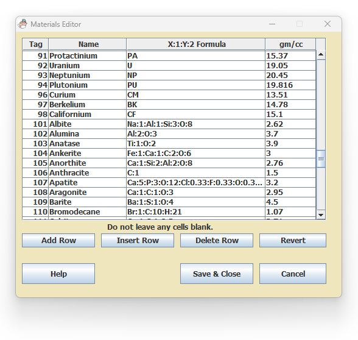

Requires ImageJ 1.53k or higher, MuMassCalculatorLib.jar.
See the Home page for CT_Tools download and installation instructions.
The Materials Editor provides a non-modal dialog that allows the user to
edit the list of material names, formulas and densities used to compute mass and linear attenuation coefficients.
The materials list saves a lot of tedious typing of formulas and
densities used by the CT_Tools plugins.
Most of the ImageJ plugins that use the MuMassCalculator library use a
list of materials saved in a file DefaultMaterials.csv in the ImageJ~/plugins/DialogData
folder.
If the ImageJ~/plugins/DialogData/DefaultMaterials.csv does not exist, one is automatically created that contains required elemental data and several example formulas (see below).
DefaultMaterials.csv contains a header followed by a list containing a unique
integer identifier or "Tag" for each material, the material's common
name, formula, and density.
The list can also be created or modified by any
text editor or spreadsheet application that handles comma separated
value (csv) files.

The Materials Editor UI
Tag list requirements
DefaultMaterials.csv is the only material list recognized by
the ImageJ plugins1.
Must have "Tag" as the first column header.
A unique integer tag for each formula.
X:1:Y:2 Formula example CaCO3, Calcium Carbonate,
formatted as Ca:1:C:1:O:3.
Densities in grams/cc.
Do not edit the DefaultMaterials.csv file while running a
dependent plugin.
Tag list features
Tags are not required to be sorted in numerical order or
numbered continuously.
Duplicate Tags, bad formulas, bad densities, and blank cells raise errors. It's better to catch them before they crash your analysis.
1. During testing, mutiple materials lists were allowed
and chaos rapidly ensued because each plugin was soon using a different
materials list. Users can create their own custom DefaultMaterials.csv
files and rename/replace them as needed in the DialogData folder.